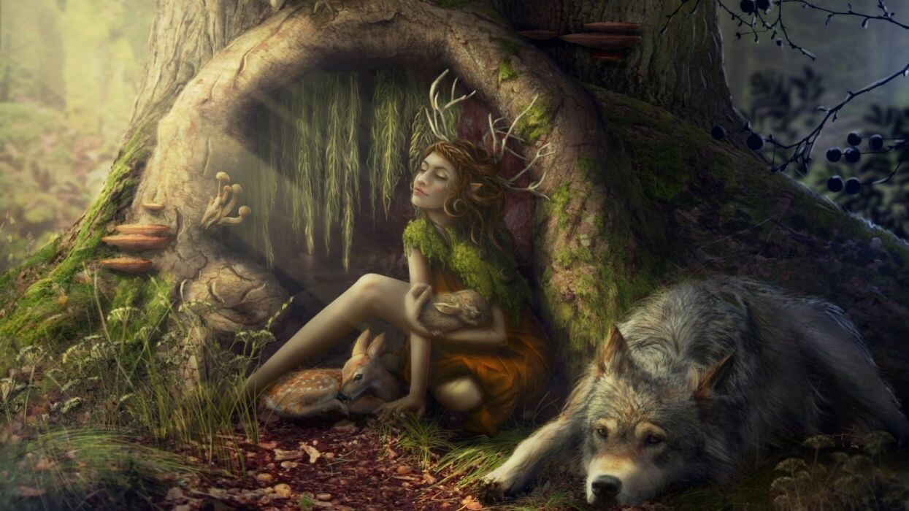

Paracosm
it's ok to have an imaginary world
"A paracosm is a detailed imaginary world.
Paracosms are thought generally to originate in childhood and to have one or numerous creators.
The creator of a paracosm has a complex and deeply felt relationship with this subjective universe,
which may incorporate real-world or imaginary characters and conventions. Commonly having its own geography, history, and language,
it is an experience that is often developed during childhood and continues over a long period of time, months or even years,
as a sophisticated reality that can last into adulthood."

>
